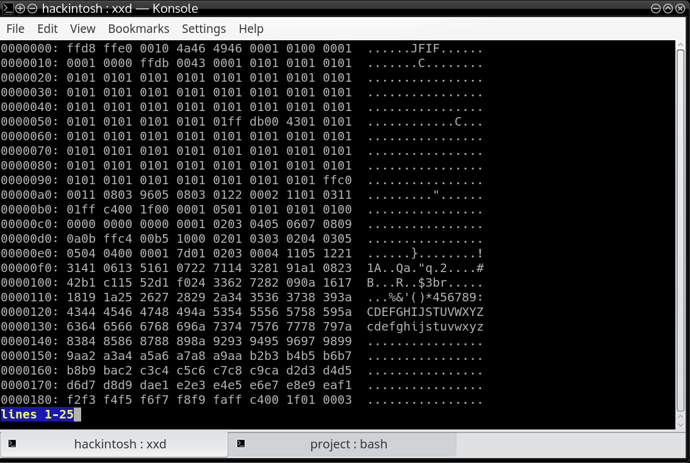

Finding file information using different methods
1) Finding file information using extensions
A common way to analysis the detail of a file is using the extensions of the file. Extension is a set of characters at the end of the file name separated by the final dot(.) from the filename.
Example: In a file with name “dolphin.jpg”, dolphin is the name of file whereas jpg is the file extension which tells the file type is actually a image/jpeg file.
Using extensions detail to find file info
In linux based systems the filetype info through extension is stored on location /usr/share/misc/magic as a structure whereas same information can be found on windows registry at HKEYCLASSESROOT subtree.
Given below is the part of linux filetype structure:
text/html html htm shtml;
text/css css;
text/xml xml rss;
image/gif gif;
image/jpeg jpeg jpg;
application/x-javascript js;
text/plain txt;
text/x-component htc;
text/mathml mml;
image/png png;
image/x-icon ico;
image/x-jng jng;
image/vnd.wap.wbmp wbmp;
application/java-archive jar war ear;
application/mac-binhex40 hqx;
application/pdf pdf;
application/x-cocoa cco;
application/x-java-archive-diff jardiff;
application/x-java-jnlp-file jnlp;
application/x-makeself run;
application/x-perl pl pm;
application/x-pilot prc pdb;
application/x-rar-compressed rar;
application/x-redhat-package-manager rpm;
application/x-sea sea;
application/x-shockwave-flash swf;
application/x-stuffit sit;
application/x-tcl tcl tk;
application/x-x509-ca-cert der pem crt;
application/x-xpinstall xpi;
application/zip zip;
application/octet-stream deb;
application/octet-stream bin exe dll;
application/octet-stream dmg;
application/octet-stream eot;
application/octet-stream iso img;
application/octet-stream msi msp msm;
audio/mpeg mp3;
audio/x-realaudio ra;
video/mpeg mpeg mpg;
video/quicktime mov;
video/x-flv flv;
video/x-msvideo avi;
video/x-ms-wmv wmv;
video/x-ms-asf asx asf;
video/x-mng mng;
Advantage of using these sources is reliability as they are stored by operating system default itself and its also easy to use and handle across different programs.
The issue with getting dependent on file extension is that extensions are a convention that are not enforced by the file system or OS. A user can change a extension and the file can still be used by programs.
2) Finding file information using magic number
Much reliable way to find any file details can be using Header signature of a file.
Typically file header contains metadata about the file to help a software application validate the file content is correct or not, load the data and view or process the data. Header signature or also called magic number typically are at the start of the file and allows a program to initially determine if the file is valid by first checking presence of number.
Often quoted example is JPEG byte sequence 0xFF 0xD8 0xFF 0xE0, appear as the characters ÿØÿà when JPEG file viewed in a hex/ASCII editor.

Using these magic number has advantage over using file extension as these number produce accurate result of file type. Manipulating these number will result the file to be not identified by application that will process it.
Using magic number to find file info
You can get hexadecimal magic number of a program using any hexeditor tool in linux or windows system. For example in linux system you can use xxd as you hex editor.
$xxd filename
Once you find the magic number you can compare them with the magic numbers of different format.
You can also use file command (which exatly done the same to find the file
type using magic numbers).
3) Finding file information by analysing the contain inside the file
Most of the file we deal in real are text based(containing ASCII characters).
A text based file can be analysed by looking at its content.For example for programming files we can look at the header at the starting of code to find the programming language used. All programing code has includes at the starting of program in their defined format or have shebang ‘#!/bin/program’ at the start.
#include<stduo.h> C/C++
#!/bin/bash Bash executable file
#!/bin/sh sh executable
#!/bin/perl perl program
#!/bin/ruby ruby program
<?xml version="1.0" encoding="UTF-8"?> xml file
etc
For configuration file we can look for the syntax type used by common
formats like yml,ini or xml.
For example we can look for name=value field in case of ini config files.
These header are processed by programs to find how to treat these file or
through which compiler to run these file. Hence they are mostly included in
fix formatted files and we can use them to get desirable file info.
Subscribe to Linuxed and reversed
Get the latest posts delivered right to your inbox